01 · 언어의 벽
“가게와 게시글에 적힌 내용을 이해하기 어려워요.”
내가 고른 언어로
읽는 동네 가게.
처음에 고른 언어로 가게 정보와 게시글을 보여줘요. 영어 응대, 주차처럼 꼭 필요한 정보는 누구나 알아보는 아이콘으로 표시해요.
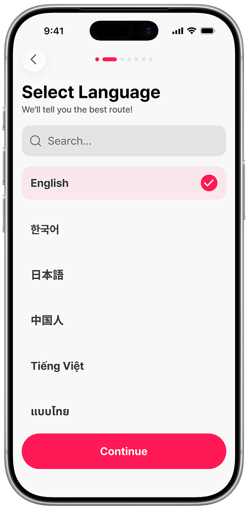
핑덤을 소개할게요
핑덤은 한국을 찾은 외국인 여행자를 위한 위치 기반 앱이에요.
현지인이 즐겨 찾는 가게를 발견하고, 지금 가도 되는지 확인하고,
혜택 저장부터 예약·길찾기까지 한 번에 이어져요.
왜 핑덤일까요?
로컬 상권 &
현지인 체험 중심
고속성장 구간
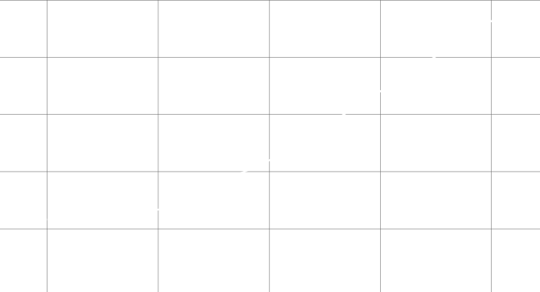
관광객 수(명)
연도
Data Analytics
한국을 찾는 외국인 관광객은 꾸준히 늘었고, 2023년 이후에는 로컬 상권과 현지인 체험을 중심으로 더 가파르게 늘고 있어요.
출처: 한국관광공사 관광통계 / 방한 외국인 관광객 동향 (2017-2025)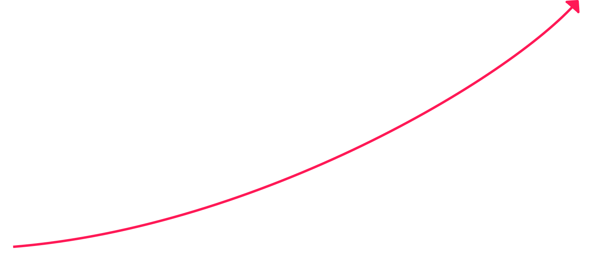
2026년 1월
2026년 8월
Data Analytics
골목상권 점주의 글로벌 결제 단말기 도입률은 312%, 소규모 택스리펀 가맹점 수는 215% 늘었어요. 골목상권의 외국인 매출도 98% 늘어, 전체 자영업 평균(18%)을 크게 앞섰어요.
출처: 자영업자용 POS 분석 센터 (2026)Insights
여행자의 로컬 상권 방문 여정을 살펴보니, 실제 방문을 막는 병목은 '정보 검증' 단계였어요.
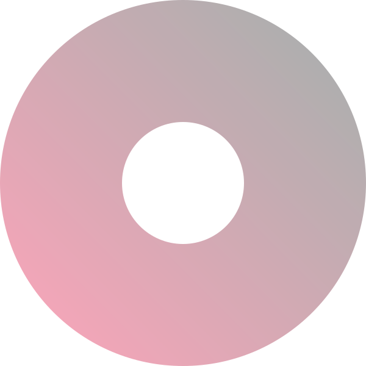
로컬 방문 방해 요소
무작정 방문
조기 마감, 휴무로 인한
헛걸음 및 여행 동선 낭비
불투명한 현장 정보
방문 포기
위험 부담 때문에 결국 뻔한
대형 랜드마크로 회귀
동선 낭비나 체험을 포기
현장 장벽으로 인한 최종 이용 실패
한국어 전용 메뉴판, 국내 번호 인증 중심의
현장 웨이팅 시스템
대기 등록 불가 및 주문 오류로 매장 진입 포기
그래서 핑덤은, 여행자와 가게 사이의
세 개의 벽을 넘어요.
01 · 언어의 벽
“가게와 게시글에 적힌 내용을 이해하기 어려워요.”
처음에 고른 언어로 가게 정보와 게시글을 보여줘요. 영어 응대, 주차처럼 꼭 필요한 정보는 누구나 알아보는 아이콘으로 표시해요.

02 · 발견의 벽
“내가 좋아할 만한 로컬 가게는 어디 있을까요?”
내 위치와 취향, 요즘 뜨는 곳을 함께 살펴 장소를 추천해요. 음식점·음악·팝업·패션 카테고리만 눌러도 원하는 종류의 장소가 지도에 모여요.
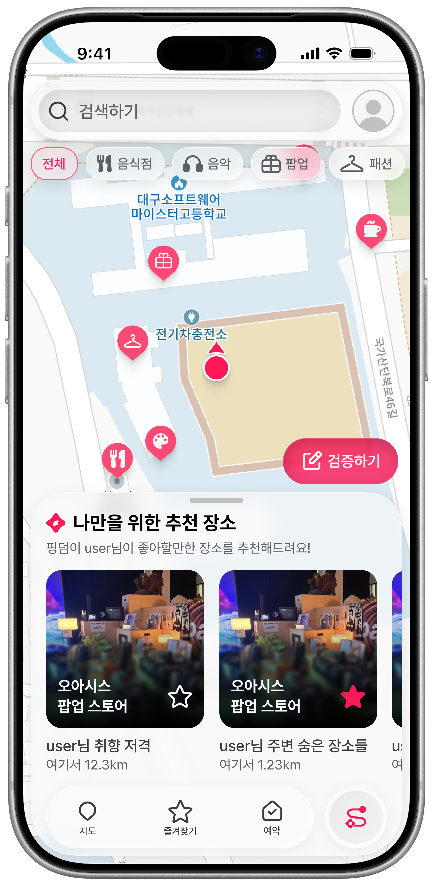
03 · 확신의 벽
“이곳, 지금 가도 괜찮을까요?”
지금 영업 중인지, 몇 명이 직접 다녀와 검증했는지 보여줘요. 방문자가 고른 좋은 점과 사진 리뷰로 가기 전에 판단할 수 있어요.
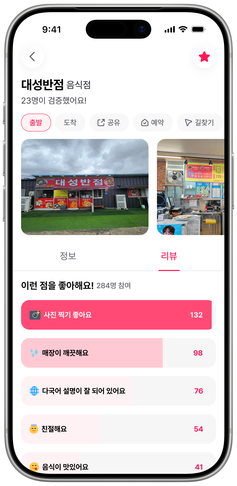
여행자에게는 헛걸음 없는 여행을,
동네 가게에는 새로운 손님을.
핑덤 둘러보기 ↓
PINGDOM FOR TRAVELERS
지도에서 만나는 주변의 장소.
취향에 맞는 추천으로
오늘
가고 싶은 곳을 찾아보세요.
주변의 장소를 찾고,
취향에 맞게 여행하세요.
DISCOVER YOUR LOCAL
BEFORE & AFTER YOUR VISIT
방문할 곳을 이해하고, 일정을 준비하고.
다녀온 순간까지 핑덤에
남겨보세요.
장소 정보
영업 상태와 위치, 영어 응대·주차 같은 편의 정보.
쿠폰과 길찾기까지
한곳에서 확인하세요.
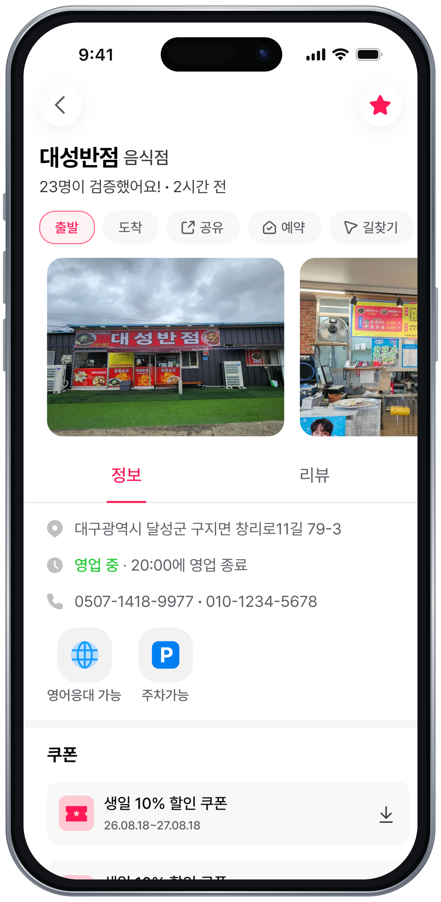
커뮤니티
스팟·다이어리·가계부를 나누고,
나라별로 골라 다른 여행자의 이야기를 만나보세요.
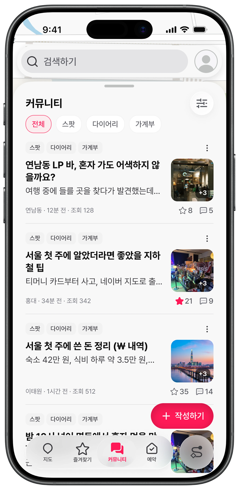
방문 검증
방문 사진과 추천 이유를 남기면
검증한 사람 수와 함께 장소에 표시돼
다음 방문자의 선택을 도와요.
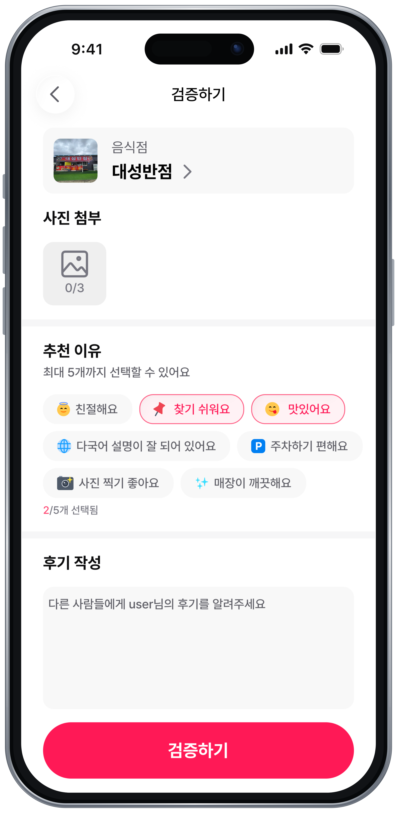
예약과 혜택
날짜와 인원, 시간을 정해 예약하고
장소의 쿠폰도 함께 챙기세요.
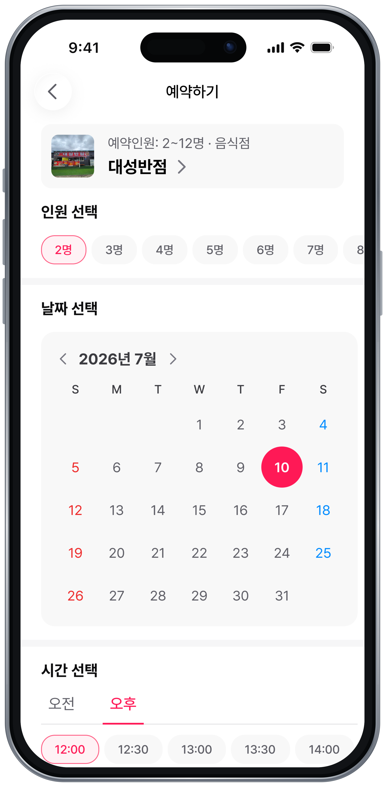
여행 기록
여행 기간을 정하고,
내가 검증한 장소를 한곳에 모아보세요.
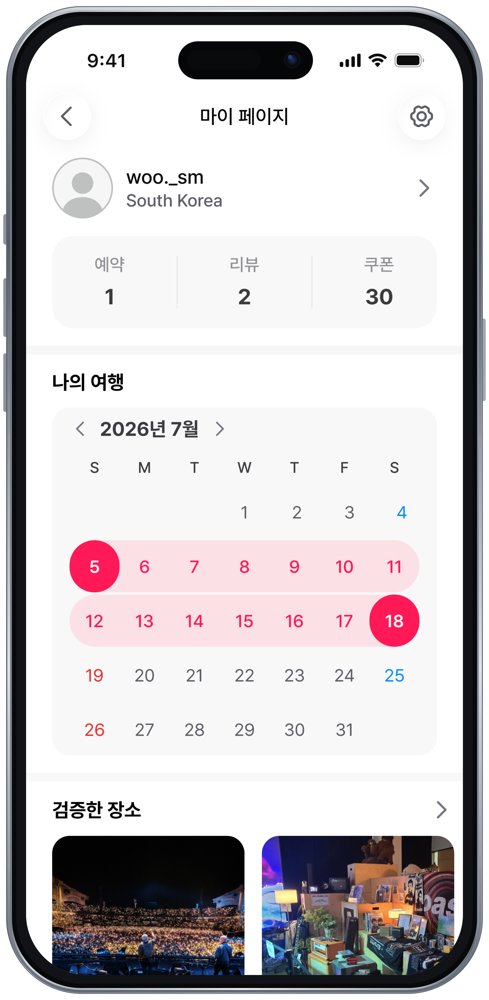
핑덤만의 차이
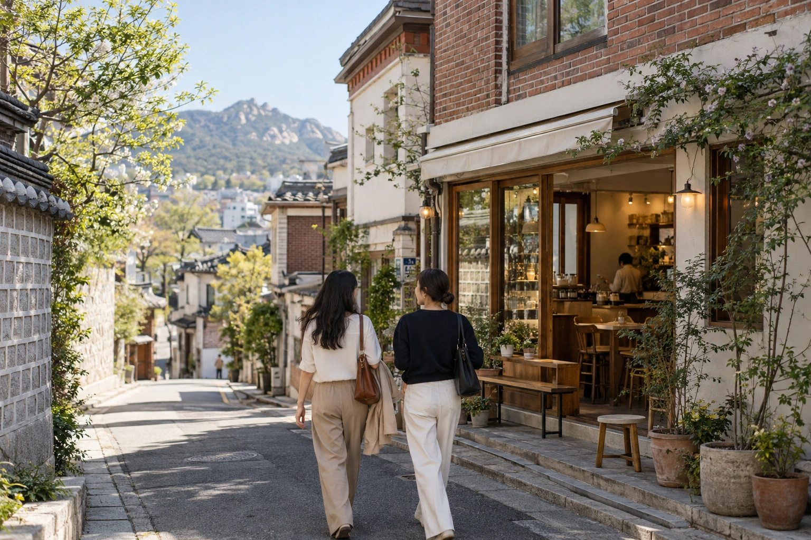
원하는 장소를 찾고,
방문의 순간을 남기세요.
가게의 정보와 이벤트를 등록하고,
새로운 손님을 맞이하세요.
장소와 사업자 정보를 검토하고,
서비스의 데이터를 관리합니다.
ONE CONNECTED PLATFORM
장소를 발견하고, 방문을 준비하고.
경험을 남기는
모바일 앱.
장소 등록부터 운영 정보와 이벤트까지.
내 가게를
관리하는 상점주 센터.
장소와 사업자 정보를 검토하고
데이터를 관리하는
운영 콘솔.
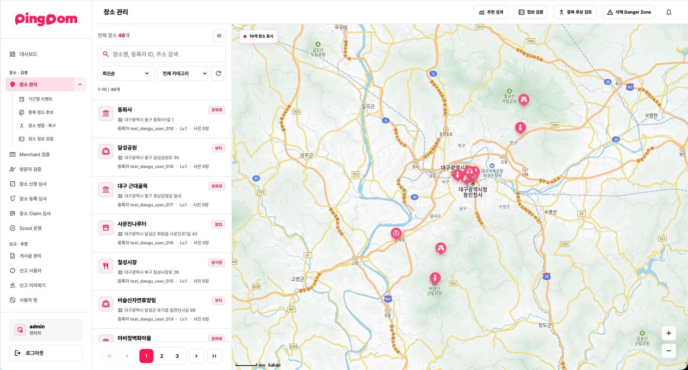
PINGDOM FOR LOCAL BUSINESSES
가게의 위치와 운영 정보를 직접 등록하고,
이벤트와 혜택을
관리하세요.
장소 운영에 필요한 일을 웹에서 이어갑니다.
상점주 센터 · 신규 장소 등록
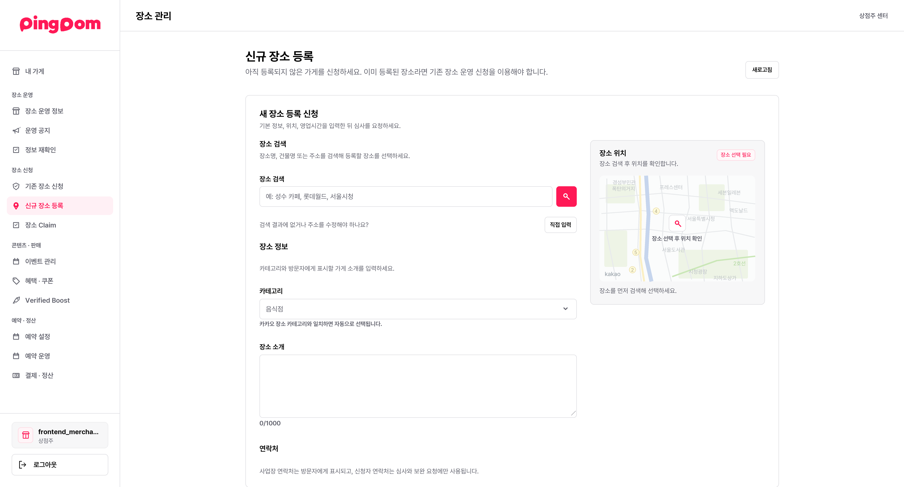
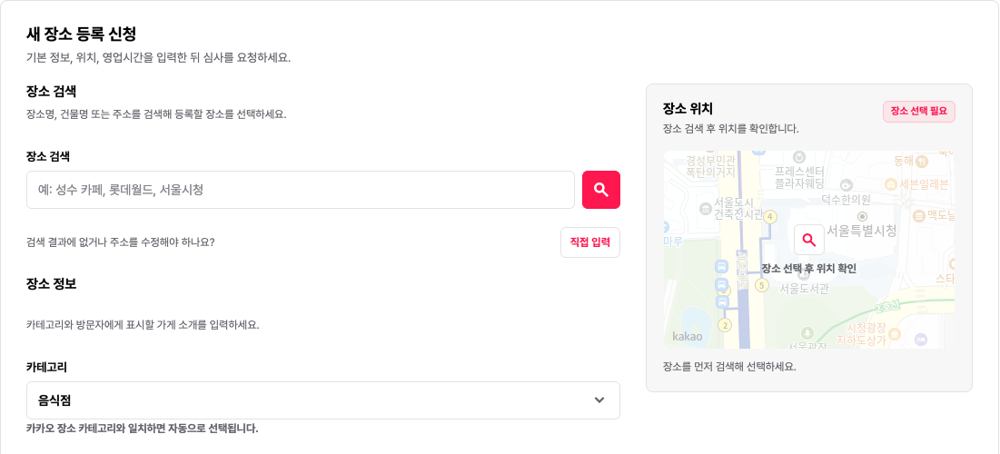
이벤트 관리
이벤트의 일정과 내용을 등록하고,
이미지와 혜택을 함께
준비하세요.
상점주 센터에서 가게의 소식을 관리합니다.
실제 상점주 웹의 등록 전 화면입니다.
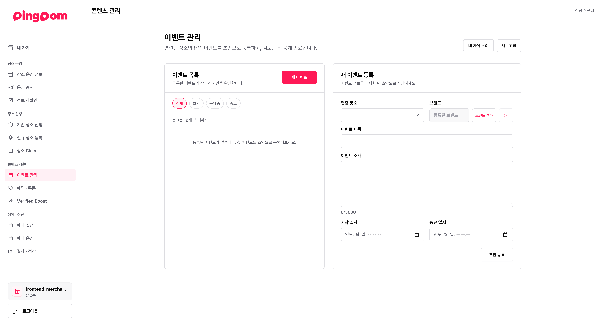
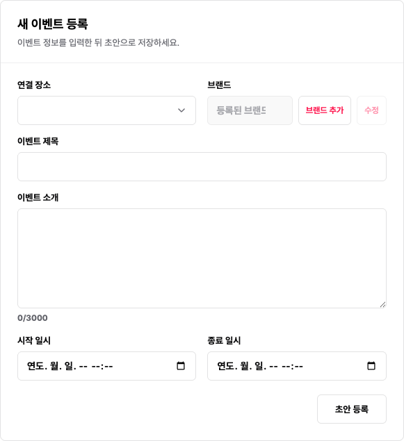
PINGDOM INTELLIGENCE
장소를 찾는 여행자에게도,
다음 결정을 준비하는 상점주에게도.
원하는 분위기와 조건을 바탕으로
장소를 추천하는 Pingdom
AI.
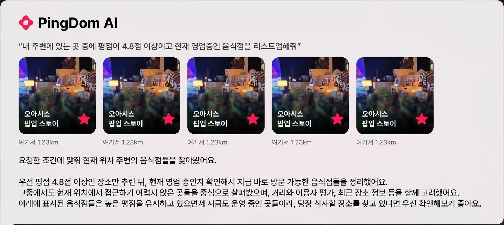
업종과 고객, 운영 조건을 입력하면
유동인구 데이터로 상권·입지 분석
보고서까지 만들어주는 컨설팅 서비스.
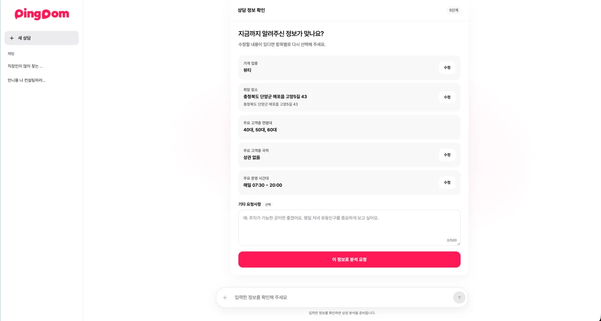
Pingdom AI
원하는 분위기와 조건을 말하면,
Pingdom AI가 장소를 추천해요.
Pingdom Consulting
업종과 고객, 운영 조건을 담아
상권에 대한 고민을 상담하세요.
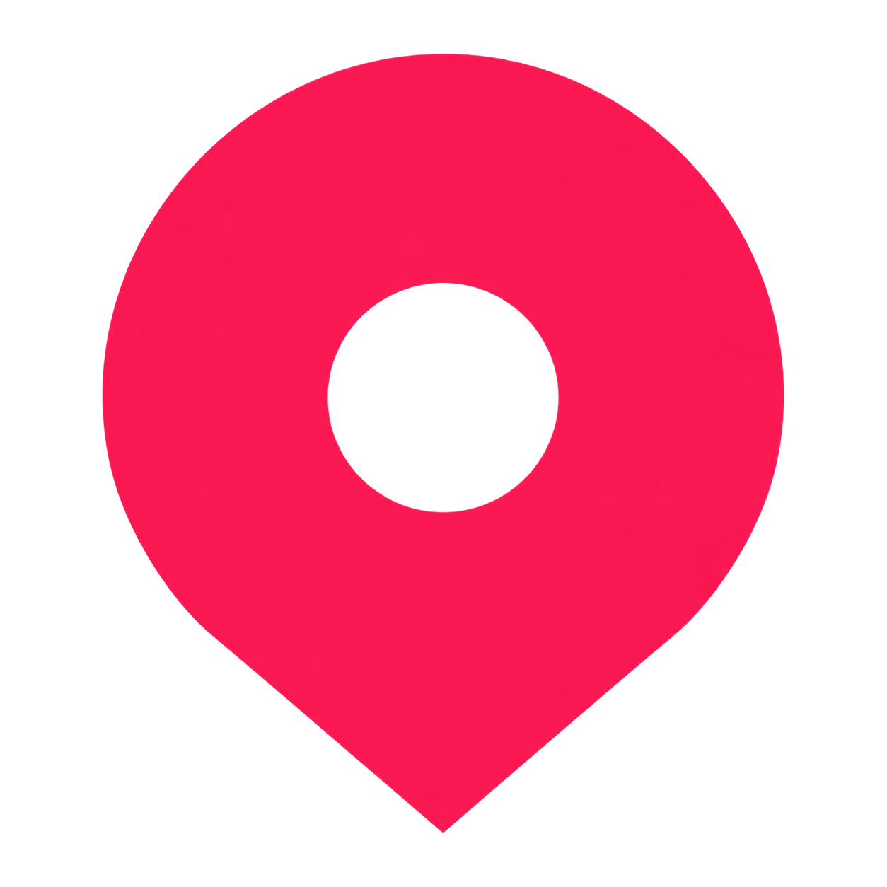
핑덤의 다음 여정
좋은 장소를 발견하는 경험이
한국을 넘어 세계로 이어지도록.